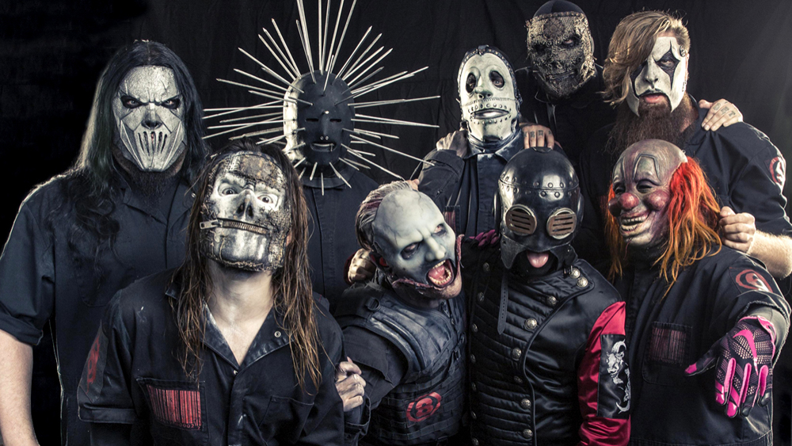
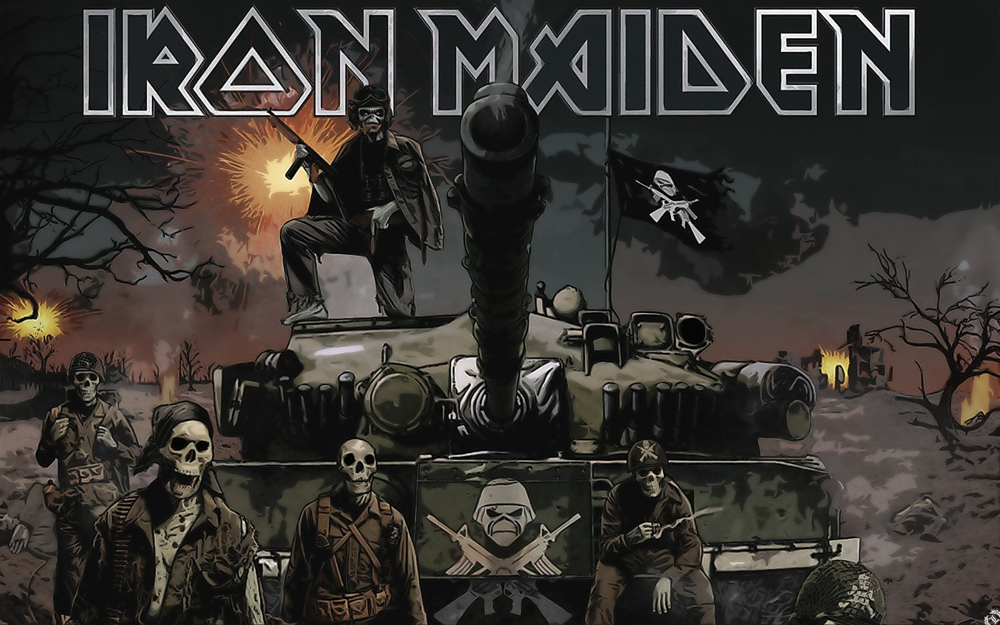
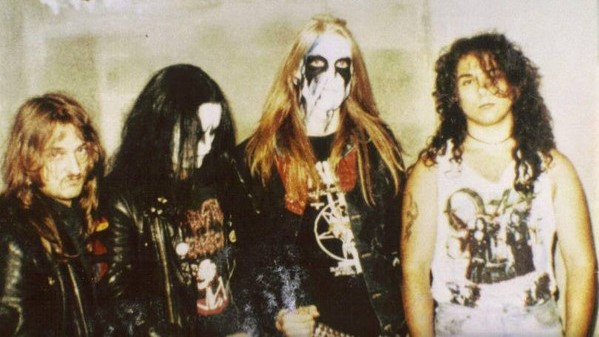
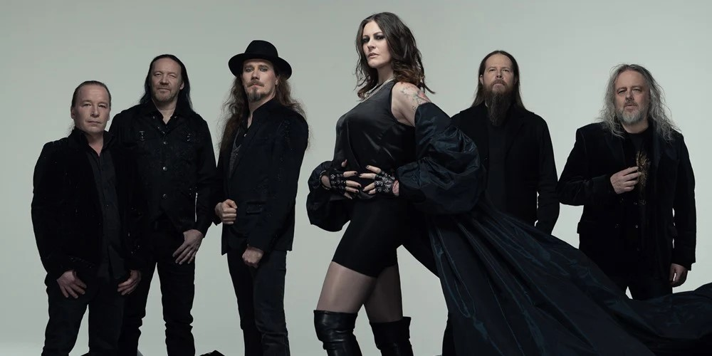

Le metal est un genre musical extrêmement riche, avec énormément de genres et de sous-genres. Contrairement aux idées reçues, il ne se limite pas à un seul style ou à un son uniforme. Au fil des décennies, le metal s'est diversifié pour proposer une palette musicale très large, capable de toucher des publics très différents.
Le metal s'est surtout développé par une immense diversité de styles et d'approches musicales. À partir d'une base commune, les artistes ont exploré différentes manières de composer, de jouer et de transmettre des émotions, ce qui a rapidement mené à une multiplication des genres et sous-genres.
Parmi les sous-genres les plus connus, on retrouve le heavy metal traditionnel. Ce style met en avant des mélodies fortes, des solos de guitare techniques et une identité musicale marquée. Il constitue souvent une première porte d'entrée dans l'univers du metal pour de nombreux auditeurs.
Avec le temps, des genres plus agressifs apparaissent, comme le thrash metal. Plus rapide et plus brutal, ce style se caractérise par des rythmes soutenus, des riffs rapides et une énergie très directe. Il a joué un rôle majeur dans l'évolution du metal moderne.
D'autres courants vont encore plus loin dans l'intensité, comme le death metal ou le black metal. Le death metal se distingue par ses voix gutturales et sa technicité, tandis que le black metal mise davantage sur des ambiances sombres et atmosphériques. Ces styles montrent la grande liberté artistique du metal.
À l'inverse, le metal peut aussi être très mélodique. Le power metal, par exemple, met l'accent sur des refrains accrocheurs et des thèmes épiques. Le metal symphonique mélange quant à lui guitares saturées et éléments orchestraux, créant une musique à la fois puissante et accessible.
Le metal ne cesse également de se mélanger à d'autres genres musicaux, donnant naissance à des styles hybrides comme le metalcore. Ce sous-genre combine la puissance du metal avec l'énergie du hardcore punk, notamment à travers des breakdowns et des alternances entre agressivité et mélodie.
Un groupe emblématique du metalcore est Bullet for My Valentine. Leur musique illustre parfaitement l'équilibre entre riffs lourds, solos travaillés et refrains mélodiques. Ils ont permis à de nombreux auditeurs de découvrir le metal grâce à un son intense mais émotionnel.
Au-delà des styles musicaux, le metal est aussi une culture à part entière. Chaque sous-genre possède ses codes, ses esthétiques et ses thématiques, tout en restant lié à une grande communauté. Cette diversité culturelle renforce le sentiment d'appartenance des fans.
En définitive, le metal est un genre extrêmement vaste dans lequel chacun peut trouver sa place. Que l'on préfère des sons mélodiques, agressifs ou expérimentaux, il existe toujours un style de metal adapté. Cette richesse explique la longévité et l'influence durable du metal dans le paysage musical.

|
Le nu metal est un genre qui mélange le metal avec des influences extérieures comme le hip-hop, l'électro ou le rock alternatif. Il se caractérise par des riffs souvent simples mais très lourds, des rythmes marqués et une forte place accordée aux émotions et aux paroles. Linkin Park représente un nu metal accessible et mélodique, avec une alternance entre chant clair, rap et passages plus intenses. |
|---|---|
|
Le nu metal peut aussi être extrêmement violent. Slipknot propose une version beaucoup plus agressive du nu metal, avec une batterie très présente, des cris et une atmosphère chaotique. L'écoute permet de comprendre que le nu metal peut être aussi bien introspectif que extrêmement violent. |
 |

|
Le metalcore est un genre hybride qui mélange la brutalité du metal et l'énergie du hardcore punk. Il se reconnaît par l'utilisation fréquente de breakdowns, de riffs puissants et par l'alternance entre chant crié et chant mélodique. Bullet for My Valentine est un groupe emblématique de ce genre. Leur musique combine des riffs tranchants, des solos techniques et des refrains très accrocheurs. |
|
Le thrash metal est un genre rapide et très énergique, basé sur la vitesse et la précision. Il se distingue par des riffs rapides, une batterie intense et une agressivité constante. Metallica est l'un des groupes les plus représentatifs du thrash metal. Leurs morceaux mettent en avant la puissance, la rapidité et des compositions complexes. |

|
|  |
Le heavy metal traditionnel est plus mélodique et structuré. Il met en avant les solos de guitare, les mélodies marquantes et une voix souvent claire. Iron Maiden illustre parfaitement ce genre avec des morceaux longs, des solos reconnaissables et des thèmes épiques. |
|
Le death metal est un genre extrême, caractérisé par des voix gutturales, des rythmes complexes et une grand e technicité musicale. À l'écoute, ce genre peut sembler chaotique au premier abord, mais il repose en réalité sur une structure très travaillée. Il montre la dimension technique et exigeante du metal. |

|
|  |
Le black metal se distingue par son atmosphère sombre et froide. Il privilégie souvent l'ambiance à la technique pure, avec des sons plus bruts. À l'écoute, le black metal crée une impression de malaise ou de mystère, montrant que le metal peut aussi être très atmosphérique. |
|
Le metal symphonique mélange le metal avec des éléments de musique classique, comme les orchestres ou les chœurs. Nightwish est un groupe emblématique de ce genre. À l'écoute, on ressent une impression de grandeur et d'émotion, très différente des autres styles de metal. |
 |
Pour passer à la suite, répondez correctement.
Quel genre de Metal est le plus populaire aujourd'hui ?